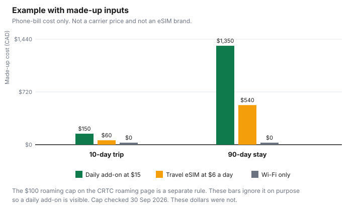

Technology · Canada
Using Your Phone in the US and Abroad: Roaming Add-Ons, eSIMs and Wi-Fi Calling
A winter trip to the US, or a snowbird stay that lasts the season, is when a Canadian phone bill stops looking like the plan you signed. Roaming means the phone is on another provider's network. The CRTC's roaming page, as of 29 Sep 2026, uses a Hamilton-to-New-York drive as the picture: once you are in New York you are no longer on your Canadian provider's network. Domestic roaming is inside Canada. International roaming is outside Canada. This page is the international case, plus the border, plus a long stay. It does not rank a carrier or an eSIM brand. Trip costs that are not the phone bill, including medical coverage, start on US trips from Canada and family travel medical insurance.
Key takeaways
- The CRTC roaming page says providers cannot charge more than $100 for roaming per billing cycle unless you explicitly agree to pay more, and that they must notify you when you are roaming internationally.
- The simplified Wireless Code marks amended roaming wording, including a $100 cap that counts daily options and plans that work abroad like home, as coming into force 13 April 2027. Check the CRTC page for which sentences apply before that date.
- A daily add-on, a travel plan, a US-and-Canada plan, a travel eSIM, a local SIM, and Wi-Fi only solve different trips. Prices: check the carrier or the seller.
- Since 1 December 2017, new devices are provided unlocked, and a locked device is unlocked free on request. An eSIM from another provider needs an unlocked phone.
- A 90-day stay and a 10-day trip are different arithmetic. The chart uses made-up daily rates so the shape is visible. They are not quotes.
How roaming charges work
On the CRTC roaming page, international roaming fees apply when you use the phone outside Canada. That includes calls you make and texts you send or receive, and data you use while you are not on Wi-Fi.
Roaming charges are typically separate from the everyday plan. Most plans, the page says, include Canada-wide calling and texting, so a drive inside Canada is not the same bill as a drive across the border. Data inside Canada but outside your local area can still be billed. Check the plan.
Accidental roaming is a border problem. The same page says a phone near the US border can attach to a US network. You can select your provider's network manually in settings. Apps can send data while the screen is off, so leaving the phone on is enough to create a data-roaming charge. Turn data roaming off if you do not intend to use foreign networks. Airplane mode blocks cellular data, calls, and texts, and still allows Wi-Fi. The page's steps differ for iPhone and Android. If you cannot find the switch, ask the provider rather than guessing.
The dollar cap is on the same page: under the Wireless Code, service providers cannot charge more than $100 for roaming per billing cycle unless you explicitly agree to pay more. They must notify you when you are roaming internationally. If the bill is still a surprise, contact the provider. The Wireless Code, simplified, as of 29 Sep 2026, places amended roaming text under a note that it comes into force on 13 April 2027, as amended by Telecom Regulatory Policy CRTC 2026-67. That amended text says the provider must suspend national and international data roaming charges once they reach $100 in a single monthly billing cycle, unless the account holder or authorized user expressly consents to more. It says the cap includes daily fixed-rate options and plans that let you use the device abroad the way you do at home, that the cap is free, that it applies per account, and that both add-ons bought before you travel and overage after you travel count toward it. The June 2017 CRTC release already described a $100 roaming cap and a $50 data-overage cap, per account, with the account holder consenting by default. Read the current page before a trip. Do not treat the 2027 wording as if every sentence of it were already the only text.
The same simplified Code says the provider must notify you, at no charge, when the device's data usage reaches $50, which it calls half of the roaming charge cap. That notification sits in the section marked as coming into force on 13 April 2027. The roaming page's $100 statement does not carry that date. Check crtc.gc.ca for the wording that applies on your billing date.
Daily add-ons vs travel plans
Carriers sell roaming in more than one shape. A daily add-on bills each day you use the foreign network.
A travel pass or travel plan covers a block of days or a block of data. A US-and-Canada plan builds the US into the monthly price so a cross-border week is not an add-on at all. Which one fits depends on how many days you will actually use the phone, not on a ranking of brands. This page does not quote live add-on prices. Check the carrier.
A daily add-on is easy to turn on and easy to forget. Ten days and ninety days are not the same product even at the same daily rate. The made-up chart later in this guide is that point, with invented dollars. A pass that looks expensive for a weekend can be the smaller number for a month. Write the number of days before you compare.
Ask the carrier, and write the answers down. Which countries are included? Does the day start at midnight in which time zone? Does a day you do not use still count? Do calls back to Canada count as roaming minutes? Does the add-on count toward the $100 cap the roaming page describes? The simplified Code's 2027 text says daily options count toward the cap. Confirm how your provider applies that today.
Travel eSIMs and unlocked phones
The roaming page lists another path: buy a local SIM, a digital SIM (eSIM), or a prepaid plan from a provider in the country you are visiting, and compare that with your Canadian provider's roaming plans. An eSIM is a digital SIM.
It does not use the physical card you already have, which is why people use one to keep a Canadian number in the original SIM while data runs on the travel profile. Whether your phone can hold two lines at once is a device question. Check the manufacturer.
Another provider's SIM or eSIM needs a phone that is not locked to your Canadian carrier. The CRTC news release of 15 June 2017, as of 29 Sep 2026, says that as of 1 December 2017, customers can have a device unlocked free of charge on request, and all newly purchased devices must be provided unlocked. The Wireless Code, simplified, says any device provided for wireless service must be provided unlocked, and if a device is locked the provider must unlock it, or give you the means to unlock it, on request, at no charge. Confirm the phone is unlocked before you pay for an eSIM. A phone you are still financing can still be unlocked. Financing rules are on outright versus carrier financing.
A Commission letter of 28 November 2025 to Bell, as of 29 Sep 2026, says section F.1 of the Code requires devices to be provided unlocked, and cites paragraph 306 of Telecom Regulatory Policy CRTC 2017-200 for unlocking at or before the time of sale. The letter directs Bell to stop selling locked phones and to unlock, free of charge, phones still locked because of a practice of locking them for up to 60 days. That letter is about that practice. It is not a catalogue of eSIM brands. If your phone is still locked, ask your provider to unlock it at no charge and keep the request.
Travel eSIM offer types are one way to buy foreign data. An offer type is not a brand ranking, and a checkout page in US dollars is not a Canadian tax receipt. Compare the total you will pay for the days you need with the carrier add-on for the same days, after you have checked both pages. No brand is named here.
Wi-Fi calling
Wi-Fi is the roaming page's way to use the phone without foreign data: turn data roaming off, or use airplane mode and turn Wi-Fi back on. With data roaming off, the page says you can still call and text, and that extra charges apply if your plan does not include calling and texting while travelling.
Wi-Fi calling, the feature that places a call through a Wi-Fi network using your Canadian number, is a carrier feature on top of that. This page does not quote a price for it abroad, and it does not say it is free. Check the carrier's page for whether those calls are treated as home usage or as roaming, and for whether the feature works outside Canada at all.
Hotel and café Wi-Fi is a network you do not control. Get Cyber Safe, as of 29 Sep 2026, lists public Wi-Fi among the connections it wants households to think about. Prefer a network you trust for banking and for account passwords. A messaging app on Wi-Fi can cover "we landed" without opening data roaming. It does not replace a working phone number if the hotel network is down.
Snowbird stays
A ten-day trip and a three-month stay should not share a daily add-on without the multiplication written out. Snowbirds also care about keeping a Canadian number for banks, clinics, and family.
Staying on a Canadian plan, using Wi-Fi calling if the carrier supports it abroad, or parking the number in a way your provider allows are carrier-specific. Check the carrier before you leave. This page does not say every snowbird can keep a Canadian number on every plan, and it does not say a US plan replaces provincial health coverage. Medical insurance for the people travelling is the travel medical guide. Teens on the same trip add their own data habits: travel with teens.
A long stay can also cross billing cycles. The $100 figure on the roaming page is per billing cycle, not per trip. Three cycles are three caps, and only if you have not consented to more. A daily add-on you leave on for ninety days is the chart, not the cap. If you consent to charges past the cap, the cap is no longer the ceiling. Read the consent text before you tap it.
Households that already bundle mobile with home internet should see whether the mobile line's roaming is priced inside the bundle or on top of it. That bundle question is mobile and home internet bundles. A home discount does not cap a US data bill.
Checklist
Do this before you leave, not from the airport Wi-Fi after the first roaming text.
| Option | Best for | Watch for |
|---|---|---|
| Carrier daily roaming add-on | A short trip when you want your usual number and you know the day count. | The daily rate times the days. Check whether unused days bill. Check the carrier. |
| Carrier travel pass or plan | A block of days longer than a weekend, still on your number. | Which countries, which data amount, and what happens on day one after the pass ends. |
| US and Canada plan | Regular cross-border weeks, if you would buy the add-on often enough to care. | The monthly price versus the trips you actually take. Check the carrier. Mexico or further travel may be outside it. |
| Travel eSIM on an unlocked phone | Data in one country while you keep the Canadian SIM for calls on Wi-Fi or when you choose. | The phone must be unlocked. Compare the total for your days. No brand is ranked here. |
| Local SIM | A long stay when a physical card is easy to buy on arrival. | Your Canadian number may be offline while that card is in the phone, unless the phone supports two lines. Check the device. |
| Wi-Fi only | A trip where maps and mail can wait for a trusted network. | Data roaming must actually be off. Calls and texts can still bill if the plan does not include them abroad. Check the carrier. |
| Protection | What the CRTC page says |
|---|---|
| Roaming charge cap | The roaming page: providers cannot charge more than $100 for roaming per billing cycle unless you explicitly agree to pay more. |
| Amended cap wording | Simplified Code: text in force 13 Apr 2027 suspends national and international data roaming at $100 per monthly billing cycle unless you consent, including daily options and home-style travel plans, per account, at no charge. |
| Notification | The roaming page: providers must notify you when you are roaming internationally. Amended notification text on the simplified Code is marked in force 13 Apr 2027. |
| Data overage at home | Simplified Code: suspend data overage charges at $50 in a billing cycle unless you consent. That is domestic overage, not the roaming cap. The 2017 release states both caps per account. |
| Unlock | New devices provided unlocked since 1 Dec 2017. Locked devices unlocked free on request. |
Example with made-up inputs. A daily add-on at $15 a day is $150 over 10 days and $1,350 over 90 days. A travel eSIM at $6 a day is $60 and $540. Wi-Fi only is $0 on the phone bill in both columns, if data roaming stays off and calls are not billed. None of these rates was taken from a carrier page. The $100 cap is not applied inside the chart, so you can see the raw multiplication. On a real bill, consenting past the cap is what lets a daily add-on keep climbing.
| Option | 10-day trip | 90-day stay |
|---|---|---|
| Daily add-on at $15 | $150 | $1,350 |
| Travel eSIM at $6 a day | $60 | $540 |
| Wi-Fi only | $0 | $0 |

Sources
- CRTC, international roaming fees, as of 29 Sep 2026: domestic versus international roaming; border attachment; data roaming off and airplane mode; cannot charge more than $100 for roaming per billing cycle unless you explicitly agree; notify when roaming internationally; local SIM, eSIM, or prepaid as a comparison.
- CRTC, The Wireless Code, simplified, as of 29 Sep 2026: amended roaming text in force 13 Apr 2027 under Telecom Regulatory Policy CRTC 2026-67, including the $100 data-roaming suspension, daily options, per-account application, and the $50 usage notice tied to that section; $50 domestic data-overage cap unless you consent; devices provided unlocked.
- CRTC news release, 15 June 2017, as of 29 Sep 2026: from 1 Dec 2017, unlock free on request and new devices provided unlocked; caps the release states as $50 and $100 per month, per account.
- CRTC letter to Bell, 28 Nov 2025, as of 29 Sep 2026: section F.1 and Telecom Regulatory Policy 2017-200 paragraph 306 on providing devices unlocked; direction to Bell about phones locked for up to 60 days.
- Get Cyber Safe homepage, as of 29 Sep 2026. Add-on prices and Wi-Fi-calling rates: check the carrier.
Frequently asked questions
How do I avoid roaming charges in the US?
Turn data roaming off before you are near a US network, or use a roaming add-on you have priced for the days you will actually travel. The CRTC roaming page also says you can choose your own provider's network manually if the phone is grabbing a US tower from the Canadian side. Wi-Fi covers data only while you are on Wi-Fi. Check the carrier for the add-on price.
Is a travel eSIM cheaper than my carrier's roaming add-on?
It can be, for the days you need, and it can be more. Compare the total on both pages for the same trip. The phone has to be unlocked. This page does not rank eSIM brands or quote a live price, so check the seller and the carrier.
Is there a cap on roaming charges in Canada?
The CRTC roaming page says providers cannot charge more than $100 for roaming per billing cycle unless you explicitly agree to pay more. The simplified Wireless Code marks amended wording of that cap, including daily options, as coming into force 13 April 2027. A separate $50 cap applies to domestic data overage. Check crtc.gc.ca before you travel.
Can snowbirds keep their Canadian number?
Sometimes, if the Canadian plan or the carrier's Wi-Fi calling feature still supports it for a long stay. This page does not say every plan allows that. Check the carrier before you leave, and keep travel medical coverage as its own decision.
Does Wi-Fi calling cost extra abroad?
This page does not quote a price. Turning data roaming off can still leave calls and texts billable if the plan does not include them while travelling, which is what the CRTC roaming page says. Whether Wi-Fi calling itself is treated as home usage is on your carrier's page. Check the carrier.
Researched and drafted with AI assistance and fact-checked against official Canadian sources. How we create content.
Disclosure: Travel eSIM offer types are an offer type. Saving Optimizer may earn a commission if a partner link is added later. No partnership is claimed. No eSIM brand or carrier is ranked. Education only.